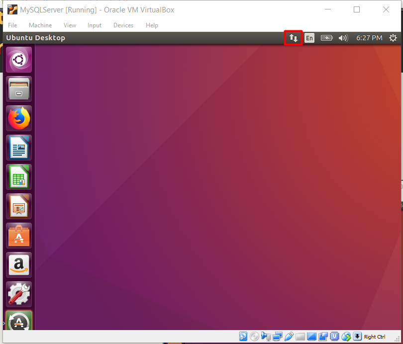
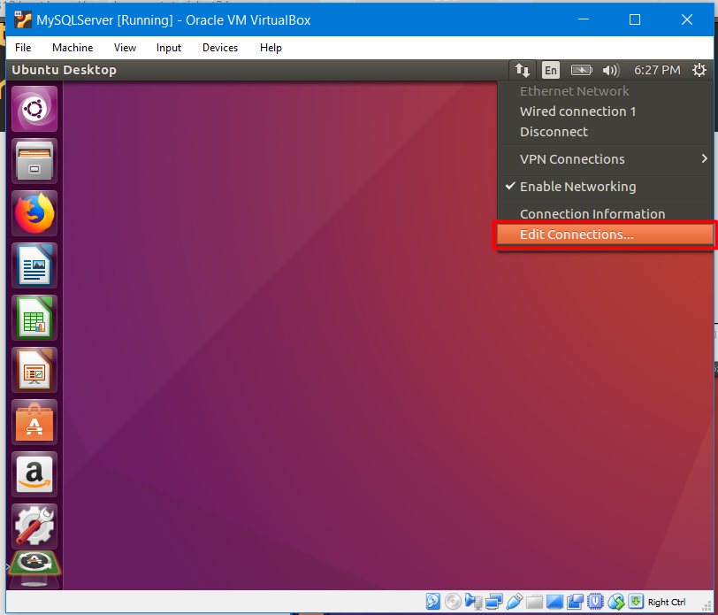
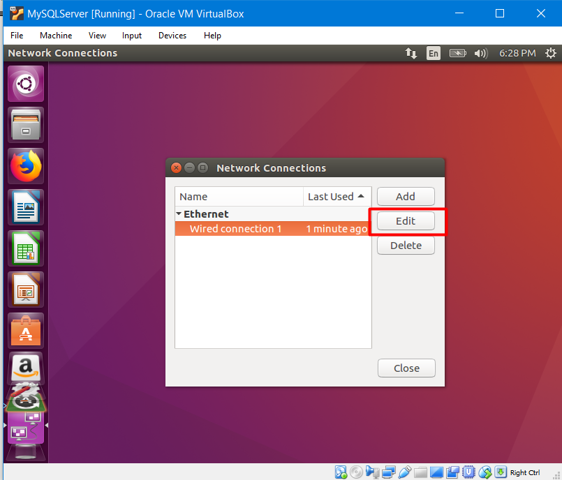
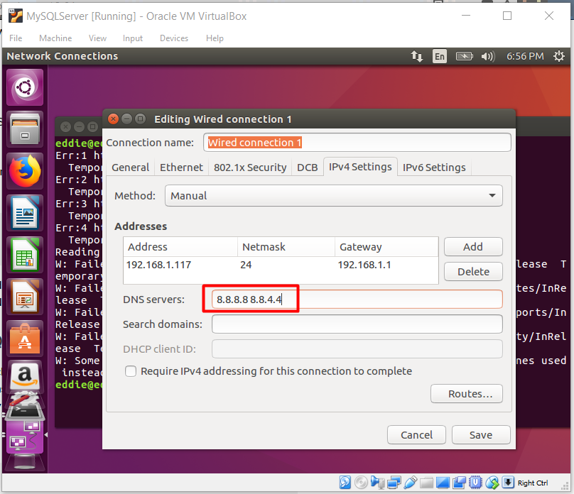
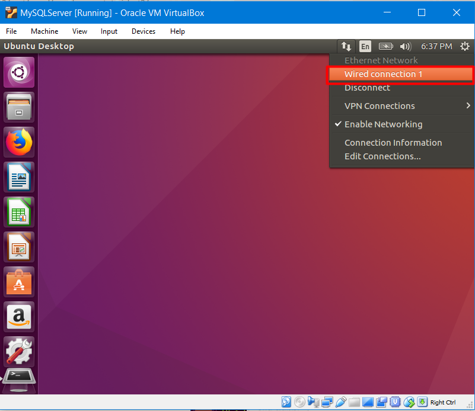
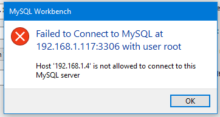

Part 3: Setting up MySQL Server
If you've made it this far your on the home stretch! In this part we'll be configuring Ubuntu, and setting up MySQL Server. If you haven't already, load up the Ubuntu VM.

While this is optional, I highly recommend giving your server a static IP address. Normally the router is reponsible for handing out IP addresses but since we will be connecting to this through code we really don't want to have to update the address every single time in the database connection.
Click the two vertical arrows in the top right corner. Then *Edit Connections… on the drop down that appears.
 
Select the Wired connection 1 option and click Edit. 
Then switch to the IPV4 Settings tab.

In the Method dropdown select the Manual option.

Now we need to define our address settings. Click the Add button and fill out the 3 fields in the Addresses table. The first column Address will be the desired ip of your server (Make sure the last number is fairly high to prevent collisions), netmask should be as specified by your router, and lastly your routers IP.

Then in the DNS servers box type in the two following IPs. These point to Googles DNS system. 
With that complete hit Save and close out the window.

To make sure the changes take effect click the two vertical arrows in the top right again, and then click Wired Connection 1 in the drop down that appears.

Open up a terminal window (ctrl-alt-t) and type in:
ifconfig
You should see that our inet address is the same as the one we specified earlier.

Next up we will disable ipv6. This is required as otherwise it will cause issues with our static ip that we just set up.
In a terminal window type:
sudo nano /etc/sysctl.conf
Followed by your password. This will open up the Nano text editor so we can modify our network config. Scroll down to the bottom of the file and add the following three lines. Then close it out by hitting (ctrl-x) and y to save.

Now back at the standard terminal screen enter the command:
sudo sysctl -p
Which it should respond to with:

And just to verify that ipv6 has been disabled enter the command:
$ cat /proc/sys/net/ipv6/conf/all/disable_ipv6
If the terminal responds with 1, ipv6 has been disabled. With our VM fully configured we can finally install MySQL Server. Type in the following commands:
sudo apt-get update
sudo apt-get install mysql-server
The first command updates our references to the APT package index, and the second installs MySQL Server. Once that has completed type in
mysql_secure_insallation
And follow the prompts. I'd recommend disabling anonymous users, but since this is for a dev environment it's up to you.
Once complete, your server is now ready to go. Three important commands you'll want to remember for controlling your mysql server are:
sudo /etc/init.d/mysql start
sudo /etc/init.d/mysql stop
sudo /etc/init.d/mysql status
If you don't already have it, I recommend downloading MySQL Workbench
To connect to your database server open up Workbench and click the Database option in the top menu, then the Connect To Database option in the dropdown that appears.

Then enter in the IP address we gave it earlier. And set the password in the vault.

With everything all set up hit Ok and Workbench should connect to the server. If you recieve an error such as this:

Follow this link to fix it.
Everything should be cherry and you can now connect to your MySQL server.

Happy coding!